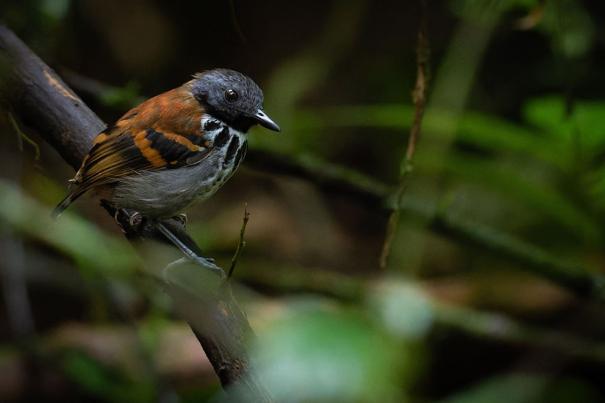
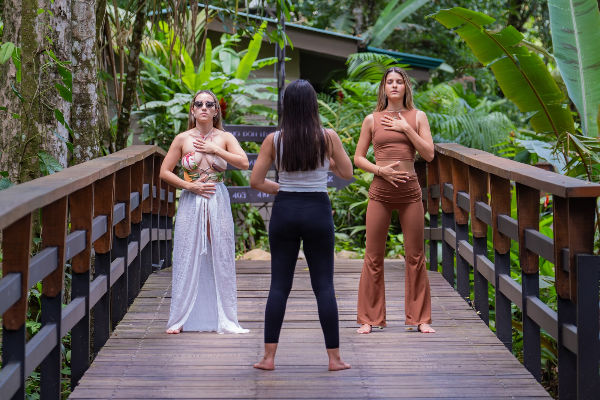

THE CHACHAGUA JOURNAL · NOVEMBER 2026
RAINFOREST RESORTS
A Costa Rican resort family


A note from Chachagua
A familiar welcome.
A sister property to discover.
Dear Chachagua community,
If Chachagua is part of your Costa Rica story, we have a new chapter to share. Rainforest Resorts is the Costa Rican resort family bringing together Chachagua Rainforest Resort & Hot Springs and our sister property, Arenal Rainforest Resort. Two places to stay—and a timely invitation to leave winter behind if you are in the Northern Hemisphere. Listen to the rainforest, choose the resort that feels right for you, and leave time to enjoy the journey.
This winter, our local Travel Designers will help shape your accommodation, experiences and practical arrangements around your interests. Stay at one resort or ask about combining both. Your plans can follow your pace.
Choose your place to return to
Two sister resorts. Distinct places to stay.
.jpg)
Chachagua Rainforest Resort & Hot Springs
For couples. Choose the Deluxe Bungalow or the Jungle Tree House for time together immersed in the forest.
For small groups. Explore the Rainforest Bungalow, River Villa and Casita Suite to find the room layout that suits the people you are travelling with.
For larger groups and families. Discover the Two Bedroom Villa, Hacienda Cercone and La Fortuna Country House for shared space and privacy. Our Travel Designers will help you choose the property and location, confirm capacity and review current photographs for your stay.
Explore Chachagua stays
Arenal Rainforest Resort
Travelling as a couple or with a small group of up to four? Explore One Bedroom Vista Arenal and Bungalow Arenal as distinct places to stay while discovering the Arenal region.
Arenal Rainforest Resort is beginning a new chapter following its recent acquisition. Throughout 2026, the new owners and their team have been working on renovating the first eight units, with improvements continuing during 2027.
Our Travel Designers will help you choose the accommodation best suited to your party and dates, reviewing the specific unit, current photographs, operating services and expected work. As we bring the resort to its best, you may see renovation work, hear construction noise or find changes to some areas and services.
Explore Arenal staysOur editorial selection
12 experiences to shape your Costa Rica stay
Choose what interests you, then ask a Travel Designer how it fits your stay. A shared experience collection is being aligned across both resort websites. The links below currently open Chachagua’s experience pages; bookings from either resort require confirmation of operation and arrangements.

01 / A GLIMPSE INTO CHACHAGUA’S RAINFOREST
Look a little closer
01
Daily Nature Walk
Location: Chachagua
Follow the forest with a guide, noticing plants, sounds and the small details that shape this living landscape.
Explore this experience →02
Birdwatching Tour
Location: Chachagua
Bring your curiosity to Chachagua’s reserve and explore its birdlife with a guide. Sightings follow nature, so no particular species is promised.
Explore this experience →03
Rainforest Night Walk
Location: Chachagua
Discover the forest after dark, when listening and careful observation reveal another side of the surroundings. Ask which route and conditions suit your group.
Explore this experience →04
Coffee & Chocolate Tour
Location: Chachagua
Explore the place of coffee, cacao and sugar cane in Costa Rican traditions. Share any dietary needs when planning participation and tastings.
Explore this experience →
02 / DISCOVER FULL-DAY AND HALF-DAY ACTIVITIES
A different kind of day
05
Horseback Riding Tour
Location: Chachagua
See the landscape at another pace on a horseback outing. The team will review riding experience, participation requirements and the route before you book.
Explore this experience →06
Children’s Eternal Rainforest Expedition
Location: Pocosol
Choose a forest-focused day at Pocosol, within the Children’s Eternal Rainforest. Plan for the journey, trail conditions and time away from your resort.
Explore this experience →07
Río Celeste Hike
Location: Tenorio
Explore the forest landscape of Tenorio Volcano National Park on a guided hike. Ask about the trail, weather conditions and the full excursion from your resort.
Explore this experience →08
Caño Negro Wildlife Boat Trip
Location: Caño Negro
Take to the water to observe a wetland environment, with birds and riverbank life to discover. Allow a full excursion window and confirm operating conditions.
Explore this experience →
03 / LET CURIOSITY LEAD
Beyond the familiar
09
Ecoglide Canopy Tour
Location: La Fortuna
Experience the rainforest from platforms and cables at an external adventure park. Confirm the specific product, participation requirements and transport from your resort.
Explore this experience →10
Peñas Blancas Safari Float
Location: Peñas Blancas
Travel along calmer river sections on a guided raft outing, watching the banks for wildlife. This float is a different experience from white-water rafting.
Explore this experience →11
Canyoning Tour
Location: La Fortuna
For those drawn to water and heights, explore a canyoning outing in the La Fortuna area. Ask about the route, equipment and physical participation requirements.
Explore this experience →12
La Fortuna Waterfall Guided Hike
Location: La Fortuna
Make room for a guided visit to La Fortuna Waterfall. Ask about steps, physical effort, admission and the best arrangements for your party.
Explore this experience →Availability, guides, weather, age requirements, physical demands, admission and transport are checked for the specific booking. Wildlife sightings and clear volcano views are not guaranteed.

From the Chachagua blog
Introducing Rainforest Resorts: Chachagua and Arenal, Two Sister Properties
Meet the family and explore an optional six-night idea across the two properties. A combined itinerary is tailored and quoted for your dates; it is not a ready-made package.
Read the Zuñiga family storyComing next on the blog
Three Ways to Share the Rainforest Without Filling Every Hour
A Trip With Friends That Leaves Room for Different Paces
From Cacao to the Trail: Discovering the Rainforest as a Family
Planning an Arenal stay in 2027?
Arenal Rainforest Resort already offers inviting places to stay as you explore the volcano region. We are continuing to improve our Casitas and Villas in stages, with the aim of completing this chapter of renewal over the coming year. During your stay, you may see renovation work and hear construction noise, and some areas or services may change. If your days are made for rainforest trails, tours and new discoveries, Arenal can be a welcoming base for memorable adventures. Our Travel Designers will help you choose accommodation and review the work expected for your dates, so you can plan with confidence.

Let’s design your next chapter
Tell us your dates, who is travelling, and what you would love to discover. Our Travel Designers will help you choose one resort or a stay across both, with the details explained before you book.
Rainforest Resorts · Costa Rica your way